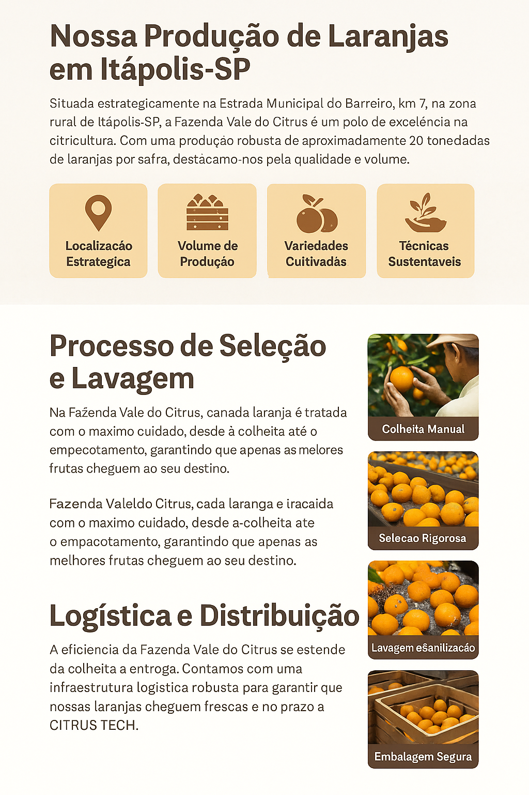

Logística e Distribuição
Início
Produção
Processo
Logística
Frota Própria:
Caminhões refrigerados
Entrega Direta:
Para a CITRUS TECH
Rastreamento em Tempo Real:
Garantia de pontualidade
Rotas Otimizadas:
Economia e menor impacto ambiental
